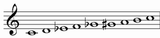
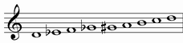
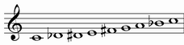
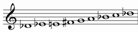
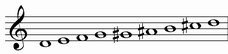
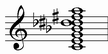
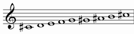

| GRADE | NAME | NOTES | NOTES TRANSPOSED IN C |
| I | DIMINISHED |  | |
| II | OCTATONIC |  |  |
DIMINISHED |
Alternative names: Wholestep - Halfstep
It starts from the first grade of diminished scale
Structure: 21212121
| chords over first notes: | |
| Triad: | Seventh chord: |
| diminished | diminished |
|
|
Chord simbols: Cdim, C°
There are only 3 transposition of this mode:


every other trasposition contains the same (or enharmonic) notes of one of theese.
OCTATONIC |
Alternative names: Halfstep - Wholestep
It starts from the second grade of diminished scale
Structure: 12121212
| chords over first notes: | ||
| Triad: | Seventh chord: | Complete chord: |
| major | dominant | |
 |
 |
 |
Chord simbols: C7, C7(b9), C13(b9), C13(b9 #9 #11)
There are only 3 transposition of this mode:

every other trasposition contains the same (or enharmonic) notes of one of theese.